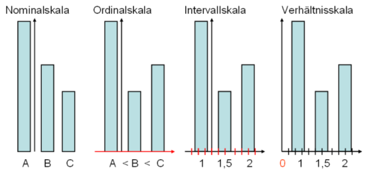
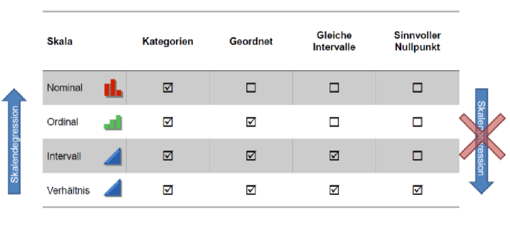
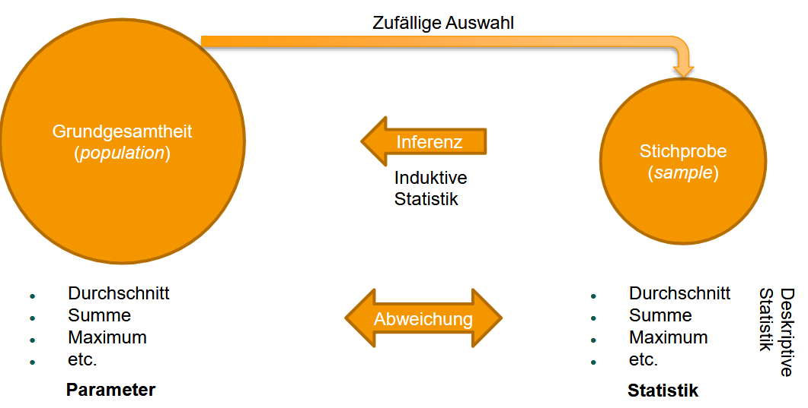
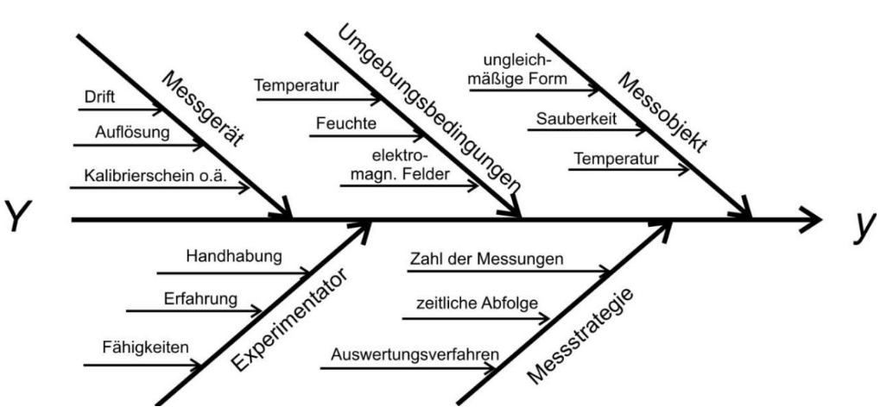

Einführung
1 Was ist Statistik
Der Begriff leitet sich etymologisch vom Lateinischen statisticum („den Staat betreffend“) ab.
Statistik wird definiert als die Lehre vom Umgang mit quantitativen Informationen (Daten) und als Methode, eine Verbindung zwischen Empirie (Erfahrung) und Theorie herzustellen.
Sie gilt als Hilfswissenschaft für viele Disziplinen und umfasst das Sammeln, Aufbereiten, Analysieren und Interpretieren von Daten.
2 Statistik als Werkzeug der Wissenschaft
2.1 Gute Wissenschaft
Zeichnet sich durch vier Kriterien aus:
- empirisch (beobachtbar)
- falsifizierbar (widerlegbar)
- objektiv (vom Beobachter unabhängig)
- öffentlich (nachprüfbar)
2.2 Wissenschaftliche Methodik
Folgt (nach Francis Bacon) einem Zyklus aus:
- Beobachtung
- Hypothese
- Vorhersage
- Test
- Evaluation
Karl Poppers Prinzip der Falsifikation besagt, dass Theorien empirisch überprüfbar sein müssen; ein einziges Gegenbeispiel kann eine Theorie widerlegen (Beispiel Relativitätstheorie).
3 Geschichte der Statistik
3.1 Statistik als Werkzeug des Staats
Ursprünge liegen in Volkszählungen (Zensus) für Steuern und Militär, z. B. im Römischen Reich oder 1449 in Nürnberg. Gottfried Achenwall prägte den Begriff in Deutschland, Sir John Sinclair verbreitete ihn im Englischen.
3.2 Wahrscheinlichkeitstheorie im Glücksspiel
Die Stochastik entwickelte sich aus der Analyse von Glücksspielen. Wichtige Meilensteine sind das De-Méré-Würfelproblem (gelöst von Pascal und Fermat), das Gesetz der großen Zahlen und die Normalverteilung (Gauß).
4 Teilgebiete der Statistik
4.1 Deskriptive Statistik
Beschreibende Statistik; Daten werden aufbereitet, grafisch dargestellt und durch Kennzahlen zusammengefasst.
4.2 Induktive Statistik
Schließende Statistik; schließt von einer Stichprobe auf die Grundgesamtheit unter Verwendung von Wahrscheinlichkeitstheorie .
4.3 Explorative Statistik
Hypothesengenerierende Statistik; sucht systematisch nach unbekannten Zusammenhängen oder Mustern in Daten (Data Mining).
5 Statistik Terminologie
- Merkmalsträger (Unit): die untersuchte Einheit (z.B. Person).
- Merkmal: die Eigenschaft (z.B. Größe).
- (Merkmals-)Ausprägung: der konkrete Wert (z. B. 180 cm) .
- Datensatz (data set): Zusammengehörige Merkmale eines/mehrerer Merkmalträger(s)
5.1 Merkmalstypen
Qualitative Merkmale: Eigenschaften/Kategorien (z. B. Geschlecht, Farbe,…).
Quantitative Merkmale: Messbare Werte, unterteilt in diskret (zählbar) und stetig (beliebige Zwischenwerte).
Unterscheidung in:
- Diskret: Abzählbar (z. B. Zahl der Augen eines Würfels, natürliche Zahlen)
- Stetig: Alle Zwischenwerte realisierbar (z. B. rationale Zahlen)
5.2 Skalenniveaus

Nominal:
Kategorien ohne Ordnung (z. B. Geschlecht, Postleitzahl).Ordinal:
Geordnete Kategorien, Abstände nicht interpretierbar (z. B. Schulnoten, Kleidergrößen).Kardinal:
Metrische Skalen- Intervallskaliert: Gleiche Abstände, aber willkürlicher Nullpunkt (z. B. Celsius).
- Verhältnisskaliert: Gleiche Abstände und natürlicher Nullpunkt, Verhältnisse interpretierbar (z. B. Kelvin, Länge).
Skalen:

- Skalendegression: (Informationsverlust durch Herabstufung des Niveaus) ist möglich;
- Skalenprogression: (höheres Niveau ohne Information) ist methodisch falsch .
5.3 Grundgesamtheit, Stichprobe

- Grundgesamtheit (population)
- Menge aller Individuen von Interesse (Merkmalträger)
- B. Menschen in Deutschland, Studierende FKI, Bäume im Park, installierte Apps,…
- Umgang abhängig von Anforderung
- In der Regel nicht komplett untersuchbar
- Menge aller Individuen von Interesse (Merkmalträger)
- Stichprobe (sample)
- Auswahl von Merkmalträgern (unit) aus Grundgesamtheit (population)
- Ziel: Repräsentation der Grundgesamtheit
- Aber: Keine exakte Repräsentation, d.h. immer Fehler/Abweichung
- i.d.R. zufällige Auswahl
- i.d.R. Umfang viel kleiner als Grundgesamtheit
5.4 Messung
Zuweisung von Werten zu Phänomenen. Jeder Messwert beinhaltet einen wahren Wert und einen Fehler (\varepsilon).
- Reliabilität: Zuverlässigkeit/Wiederholbarkeit der Messung.
- Validität: Gültigkeit (wird das gemessen, was gemessen werden soll?).
X_i = \tau_i + \varepsilon
Mit:
- gemessener Wert: X_i
- echter Wert: \tau_i
- Messfehler: \varepsilon
Ichikawa-Diagramm der Quellen für Messunsicherheit

5.5 Urliste, Urwerte
Die rohen, unverarbeiteten Daten einer Erhebung. - Ergebnis einer Datenerhebung (Messung) - Liste von Urwerten von Merkmalsträgern Sortiert oder Unsortiert - Unverarbeitet (inkl. Ausreiser, Fehleingaben) - I.d.R. unübersichtlich daher keine Aussagen möglich